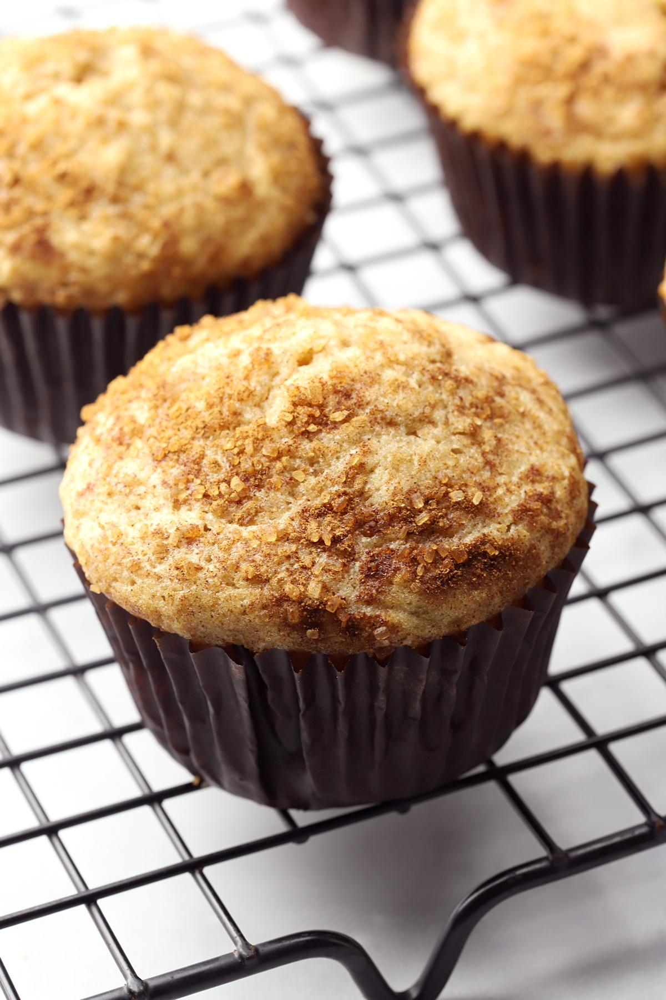

Cinnamon Walnut Muffins

Source: The Toasty Kitchen
Description
Are you craving a delectable dessert after a fantastic meal?
Or perhaps you're just in the mood for a little snack?
Well, look no further than the Cinnamon Walnut Muffins!
These soft, tender, crispy-brown cinnamon muffins can be prepared in about 30 minutes, so your mouth won't be watering for too long before you can enjoy them!
Variations of these muffins can be created by replacing the walnuts with a different ingredient, such as chocolate chips, pecans, or anything else you wish to add.
Ingredients
Muffins
- 2 cups all-purpose flour
- 1 tablespoon ground cinnamon
- 2 teaspoons baking powder
- ½ teaspoon salt
- ¾ cup granulated sugar
- ½ cup unsalted butter melted
- 2 large eggs
- ¾ cup milk
- 2 teaspoons vanilla extract
- ½ cup chopped walnuts optional
Topping
- 2 tablespoons granulated sugar
- ½ teaspoon ground cinnamon
Steps
-
Preheat oven to 350 degrees and line a muffin pan with liners, or grease, and set aside.
-
In a large bowl, whisk together flour, cinnamon, baking powder, and salt. Set aside.
-
In a separate bowl, add sugar, melted butter, eggs, milk, and vanilla extract. Mix until fully incorporated. Add to dry ingredients and stir until just combined. Add walnuts and stir to incorporate. Distribute batter between 12 muffin cups.
-
In a small bowl, combine granulated sugar and cinnamon for the topping. Sprinkle evenly over the muffins.
-
Bake for 18-22 minutes, or until a toothpick inserted in the middle comes out clean (or with crumbs, not batter).
-
Allow pan to cool for 2-3 minutes before removing muffins to a cooling rack to cool completely. Store cooled muffins in a sealed container.